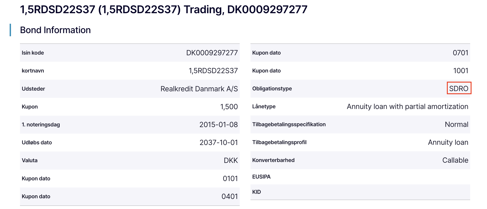
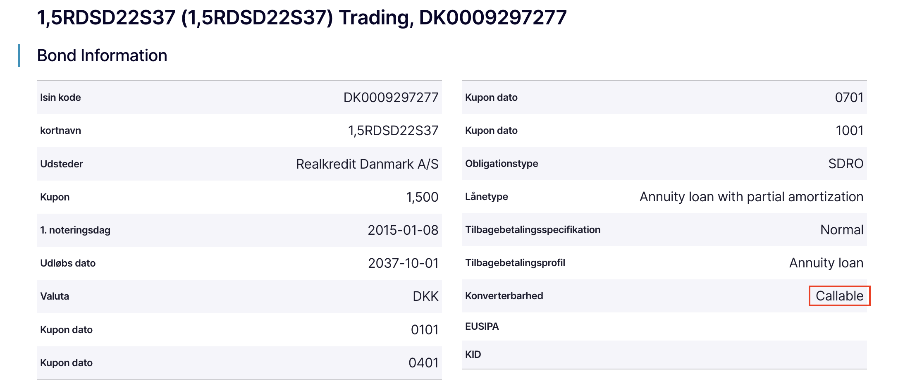
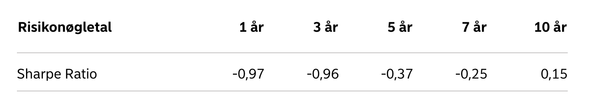
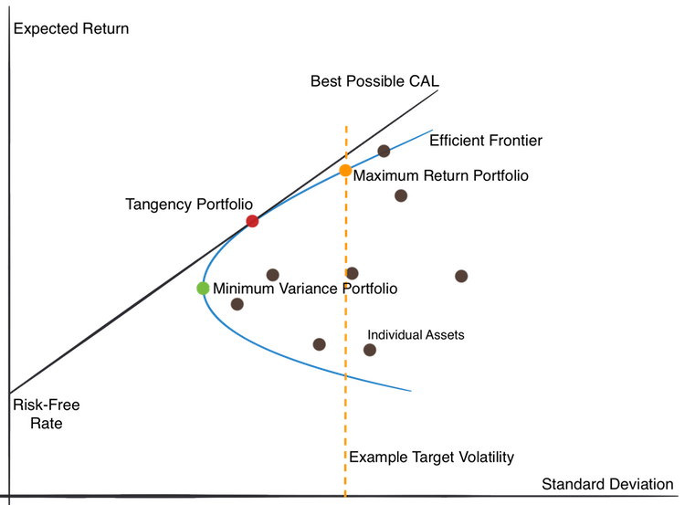

-

Temaprojekt 3 uge 2
Formål:
Formålet med temaprojektet er at give dig kompetence i at bruge, hvad ud har lært i denne uge, i praksis.
Beskrivelse:
I skal læse introen til temaprojektet herunder, før I går i gang med opgaverne.
OLA 3 Intro -
Case: Investering
Du er uvildig investeringsrådgiver og skal have møde med James Bond senere i dag.
Hr. Bond har netop har netop fået udbetalt en arbejdsskade-erstatning på 500.000 kr.
Hans tidligere aktive liv som agent, er slut og han regner med at lave skrivebordsarbejde på den engelske ambassade i København frem til sin pensionering.
Bond er enkemand, da hans kone omkom i en tragisk ulykke.
Han er 59 år gammel, og regner med at gå på pension som 67-årig.
Ved sin pension vil han bosætte sig i et sommerhus i Hornbæk.
Bond har følgende værdipapirer:
Værdipapirer Antal 1,175 % Dansk stat 2025 Købt 2015-07-09 ISIN: DK0009923138 200 1,5% Realkredit 2037 Danmark Købt 2017-08-28 ISIN: DK0009297277 300 4,160% ALM. Brand A/S Købt 2023-06-07 ISIN: DK0030487806 1000 Nordea Invest Globale obligationer KL 1 Købt 2024-12-31 ISIN: DK001017039 200 Tesla (TSLA) Købt 2019-02-01 ISIN: US88160R1014 200 Carlsberg B (CARL B) 2021-01-01 ISIN: DK0010181759 500 Novo Nordisk B (NOVO B) Købt 2023-12-01 ISIN: DK0060534915 400 A.P. Møller - Mærsk B (MAERSK B) Købt 2020-10-01 ISIN: DK0010244508 10 Danske Bank (DANSKE) Købt 2023-03-01 ISIN: DK0010274414 2.500
Du har noteret nedenstående spørgsmål fra jeres mail-korrespondance, du skal omkring på kundemødet.
Afsender:
Du er uvildig investeringsrådgiver
Modtager:
007
Du bør i denne opgave nedenstående materialer, samt links fra ugens intro:
Skatteskabelon
Skatteskabelon
-
Opgave
LøsningsforslagBemærk Excel løsningsforslaget i skatteskabelonen ligger nederst i løsningsforslaget
Besvar nedenstående spørgsmål bl.a. vha. skatteskabelonen.
Hvis der er manglende oplysninger, forsøg da at foretage udregningerne bedst muligt inden kundemødet.
-
Hvad bliver den vedhængende rente ved salg af obligationerne?
Vink: Benyt fanen for investering i skatteskabelonen.
Du skal indhente relevante købs- og salgskurser for værdipapirerne for at gennemføre udregningerne.
-
Hvad bliver skattegrundlaget ved obligationssalget?
Vink: Benyt fanen for investering i skatteskabelonen.
Du skal indhente relevante købs- og salgskurser for værdipapirerne for at gennemføre udregningerne.
-
Hvor meget kan Bond forvente at få udbetalt ved et salg af sin portefølje nu - før skat?
Vink: Benyt fanen for investering i skatteskabelonen.
Du skal indhente relevante købs- og salgskurser for værdipapirerne for at gennemføre udregningerne.
-
Hvor meget kan Bond forvente at få udbetalt ved et salg af sin portefølje nu - efter skat?
Vink: Benyt fanen for investering i skatteskabelonen.
Du skal indhente relevante købs- og salgskurser for værdipapirerne for at gennemføre udregningerne.
- Er gevinsten fra obligationssalget aktie- eller kapitalindkomst?
- Er gevinsten fra aktiesalget aktie- eller kapitalindkomst?
- Er gevinsten fra aktiesalget eller obligationssalg gunstigst beskattet?
- Kan man ud fra kursen konstatere at A.P. Møller - Mærsk B (MAERSK B) klarer sig bedre end Novo Nordisk B (NOVO B)?
- Kan du anbefale en defensiv dansk aktie med en rimelig P/E i forhold potentialet?
- Kan du anbefale en cyklisk dansk aktie med en rimelig P/E i forhold potentialet?
-
Bond har investeringsbeviser i Nordea Invest han har dog hørt om ETF'ere
Forklar kort hvad forskellen er på investeringsforeninger og ETF'ere? - Forklar kort hvad varighed betyder i forbindelse med obligationer?
-
Bond har set at der nogen steder på informationen om obligationer står SDRO, hvad betyder det mon?

-
Bond har også set at der nogen steder på informationen om obligationer står at obligationen er callable, hvad betyder det mon?

-
Bond har set der står Sharpe Ratio på nogle værdipapirer, forklar kort hvad det betyder, hvorfor er nogle af tallene negative?

-
Er der nogle råd du bør give Bond, i forhold til det rette valg af investeringsportefølje, således at han optimerer porteføljen?
Vink: Du må gerne inddrage Markowitz's Porteføljeteori

Løsningsforslag Skatteskabelon
Skatteskabelon 007 -